— ALGORITHM CONTEST / 04
第四章 字符串相关
从哈希与 KMP 走到 Z 函数、Manacher、后缀数组与自动机，字符串题的核心是把「重复」变成「可复用」。
01 / SECTION
什么是字符串(str)？
- 定义：字符串是由若干字符组成的有限序列，是计算机中表示文本的基本单位。
- 三个基本要素：字符集（ASCII / Unicode）、存储方式（连续内存）、结束标记（C 用
'\0'，C++string内部维护长度）。 - 竞赛中字符串题的常见考查点：匹配、查找、统计、去重、字典序比较、子串结构。
- 与“字符数组”的区别：C 的
char[]需自己管长度和结束符；C++std::string可动态扩容、自带比较与拼接。 - 字符串算法的核心矛盾：
O(n²)的朴素匹配太慢，于是有了哈希、KMP、自动机、后缀结构等一系列“把子串信息预处理出来”的工具。 - 很多“字符串题”其实是序列题：把字符换成整数数组，做法完全相同（如把字符映射成 1~26 再求哈希）。

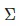
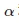
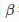
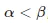
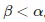


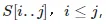

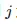
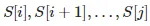
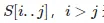
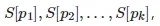
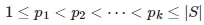


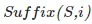
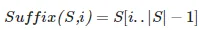


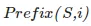
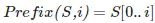
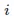

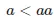
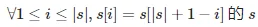
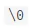
02 / SECTION
字符串基础知识
- 常见术语：
- 子串：原串中连续的一段；
- 子序列：不要求连续，只要求相对顺序；
- 前缀 / 后缀：从开头/结尾截取的连续段；
- 回文：正读反读相同；
- 字典序：从第一位开始逐位比较，短串是长串前缀时短者更小。
- 字符与整数：
'a'~'z'连续，c - 'a'可映射到 0~25；大小写转换可用±32。 - 常用操作复杂度（C++
string）：随机访问 O(1)、size()O(1)、substrO(len)、+拼接 O(n)、find朴素 O(n·m)。 - 输入注意：
cin >> s遇空格停止；整行要用getline；scanf("%s")也不吃空格。 - 输出注意：大量输出时用
printf或关闭流同步，避免cout拖慢。 - 内存注意：长字符串（10⁶ 级）不要反复
substr，会不断拷贝造成 TLE。
03 / SECTION
C语言标准库中的字符串
- 核心函数（头文件
<string.h>）： strlen(s)：长度，O(n)，不要在循环里反复调用；strcpy / strncpy：复制；strcat / strncat：拼接；strcmp / strncmp：比较，返回负/0/正；strchr / strstr：查找字符 / 子串，strstr朴素 O(n·m)；memset：整体赋值（只能 0/-1 这类按字节一致的值）；memcpy：整块拷贝，比逐字符快。- 字符分类函数（
<ctype.h>）：isdigit、isalpha、isupper、tolower、toupper。 - 常见坑：
strlen是 O(n)，for (i=0; i<strlen(s); i++)会变成 O(n²)；char s[10]存 9 个字符 +'\0'，越界不会报错只会莫名出错；strcmp不能用==代替。
c
char s[1005];
int n = strlen(s); // 先算好
for (int i = 0; i < n; ++i)
if (isdigit(s[i])) sum += s[i] - '0';04 / SECTION
C++标准库中的字符串
std::string常用接口：size/length、empty、push_back、append/+、substr(pos, len)、find/rfind、compare、c_str()。- 遍历三种写法：下标、迭代器、范围
for (char c : s)。 - 与 C 字符串互转：
string→const char*用c_str()；char[]→string直接构造。 - 常用技巧：
- 判回文：
string t = s; reverse(t.begin(), t.end()); t == s； - 计数字符：
count(s.begin(), s.end(), 'a')； - 去重前先
sort再unique； - 数字转字符串：
to_string(x)；字符串转数字：stoi / stoll / stod。 - 性能提示：
s += "x"是均摊 O(1)，但s = s + "x"每次都新建串；拼接大量片段时先reserve。
cpp
string s; getline(cin, s);
int pos = s.find("abc");
if (pos != string::npos) cout << pos;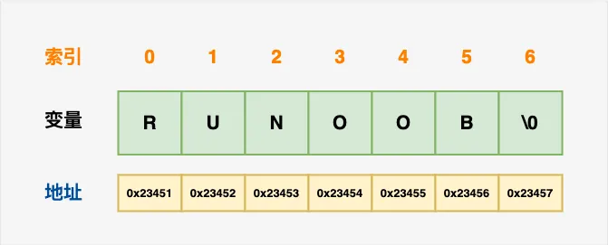
05 / SECTION
字符串匹配实例讲解
- 问题：在主串 T（长 n）中找模式串 P（长 m）的所有出现位置。
- 朴素（Brute Force）：每个起点逐字符比对，最坏
O(n·m)（如aaaa…a里找aaa…ab）。 - 优化思路三条路径：
- 哈希：预处理前缀哈希，O(1) 比较任意子串 ⇒ 总 O(n)；
- KMP：利用模式串自身的“前缀=后缀”信息跳过无效对齐 ⇒ O(n+m)；
- 自动机 / 后缀结构：多模式、多次询问时用 AC 自动机或后缀数组。
- 竞赛里最常用的还是哈希 + KMP：哈希好写、KMP 严格线性。
cpp
// 朴素匹配
for (int i = 0; i + m <= n; ++i) {
int j = 0;
while (j < m && T[i + j] == P[j]) ++j;
if (j == m) cout << i << ' ';
}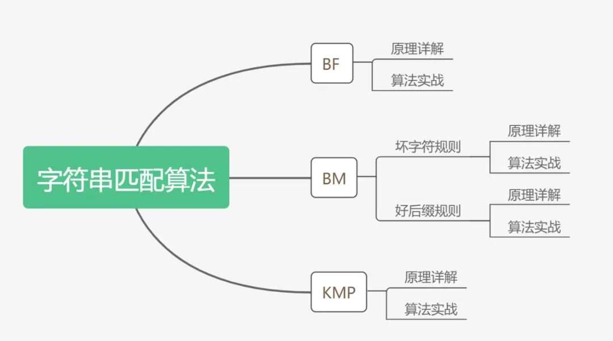
06 / SECTION
解析字符串哈希(Hash)
- 思想：把字符串映射成一个整数，用整数相等代替逐字符比较，从而 O(1) 判断两子串是否相同。
- 多项式哈希：
H(s) = (s[0]·b^(L-1) + s[1]·b^(L-2) + … + s[L-1]) mod M。 - 前缀哈希 + 区间公式：
hash(l, r) = H[r] - H[l-1]·b^(r-l+1)（模意义下）。 - 参数选择：
b取 131 / 13331 等大于字符集的质数；模数用1e9+7、1e9+9或直接用unsigned long long自然溢出（快但有被卡风险）。 - 双哈希（两个模数）可把碰撞概率降到可忽略，代价是常数翻倍。
- 常见应用：判回文（正反两套哈希）、最长公共子串（二分长度 + 哈希）、子串去重、字符串比较。
- 风险：哈希是概率算法，出题人可构造反例（尤其单模数），关键题用双哈希或改 KMP/后缀数组。
cpp
typedef unsigned long long ull;
const ull B = 131;
h[i] = h[i - 1] * B + s[i - 1]; // 1-indexed
pw[i] = pw[i - 1] * B;
ull get(int l, int r) { return h[r] - h[l - 1] * pw[r - l + 1]; }07 / SECTION
字典树（trie）/前缀树（Prefix Tree）实例讲解
- 定义：把字符串按字符逐层挂在多叉树上，根为空串，从根到某节点的路径就是一个前缀；相同前缀共用一条链。
- 结点：
next[26]（或 map）+cnt（经过次数）+end（是否为某词结尾）。 - 复杂度：插入/查询均为
O(L)（L 为串长），与集合大小无关；空间O(总字符数 × 字符集)。 - 三大用途：前缀查询、单词检索、按位异或最大值（01 trie）。
- 01 trie 求异或最大：把数按二进制从高位插入，查询时优先走“与当前位相反”的分支。
cpp
int ch[N][26], tot = 1, cnt[N];
void insert(const string &s) {
int p = 1;
for (char c : s) {
int k = c - 'a';
if (!ch[p][k]) ch[p][k] = ++tot;
p = ch[p][k]; ++cnt[p];
}
}- 空间优化：字符集大时用
unordered_map或“左儿子右兄弟”；也可用数组 + 邻接表存边。
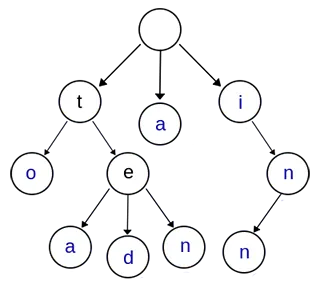
08 / SECTION
KMP算法与前缀函数实例讲解
- 前缀函数（next / π 数组）：
π[i]表示子串s[0..i]的最长相等真前缀=真后缀长度。 - 递推求法（均摊 O(n)）：
cpp
vector<int> prefix_function(const string &s) {
int n = s.size();
vector<int> pi(n, 0);
for (int i = 1; i < n; ++i) {
int j = pi[i - 1];
while (j && s[i] != s[j]) j = pi[j - 1]; // 沿失配边回跳
if (s[i] == s[j]) ++j;
pi[i] = j;
}
return pi;
}- KMP 匹配：把模式串 + 分隔符 + 主串拼起来求 π，凡
π[i] == m即命中；也可直接双指针匹配，失配时j = π[j-1]。 - 复杂度：预处理 O(m)，匹配 O(n)，总
O(n+m)；空间 O(m)。 - π 数组的其它用途：
- 求最小循环节：
n - π[n-1]，若n % (n - π[n-1]) == 0则是完整循环； - 统计每个前缀出现次数（
cnt[π[i]] += 1后倒序累加）； - 求所有 border（
j = π[j-1]迭代）。 - 与哈希对比：KMP 严格线性、无碰撞风险；哈希写起来更短但可能被卡。
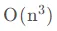
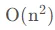
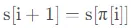
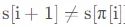
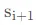
09 / SECTION
Boyer-Moore算法图文讲解
- 思想：从右往左比较，利用“坏字符规则”和“好后缀规则”一次性跳过多个位置。
- 坏字符规则：失配字符
c在模式串中最右出现位置为last(c)，则右移j - last(c)（负数时至少移 1）。 - 好后缀规则：已匹配的后缀在模式串前面再次出现，就把那段对齐过来；否则找“后缀的某个后缀是模式串前缀”的位置。
- 复杂度：预处理
O(n + σ)，平均O(n/m)，最坏O(n·m)（但实际极快）。 - 优点：不需要额外大数组，适合长文本、大字符集（如文本编辑器查找）。
- 竞赛中较少手写，多用于理解“跳跃式匹配”的思想；实战仍以 KMP/哈希为主。
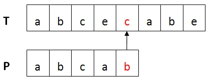
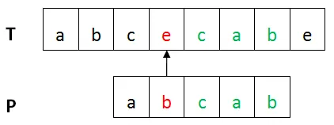
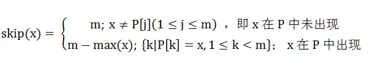
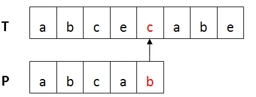
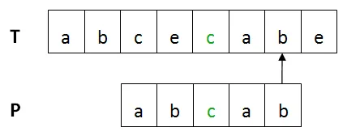
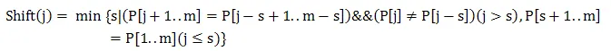
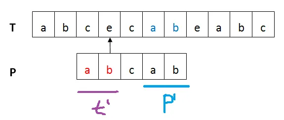
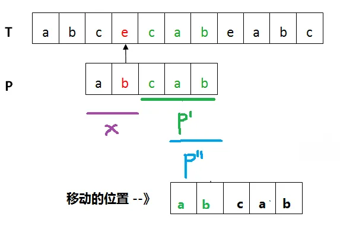
10 / SECTION
KMP和Z函数
- Z 函数：
z[i]表示s与s[i..]的最长公共前缀（LCP）长度，z[0] = n。 - 线性求法：维护当前最右匹配段
[l, r]，若i <= r则先取z[i-l]并截断到r-i+1，再暴力外扩。
cpp
vector<int> z_function(const string &s) {
int n = s.size();
vector<int> z(n);
int l = 0, r = 0;
for (int i = 1; i < n; ++i) {
if (i <= r) z[i] = min(r - i + 1, z[i - l]);
while (i + z[i] < n && s[z[i]] == s[i + z[i]]) ++z[i];
if (i + z[i] - 1 > r) l = i, r = i + z[i] - 1;
}
z[0] = n;
return z;
}- 与 π 的关系：
π[i] = z在s + '#' + s上求得；反之 Z 也能转成 π。 - 用途：模式串出现次数（拼接后 z 值 ≥ m 的位置）、字符串周期（
n % (n - z[1]) == 0时最小周期）、比较两串的 LCP（拼接 + RMQ）。 - 复杂度 O(n)，常数比 KMP 略小，代码更短。
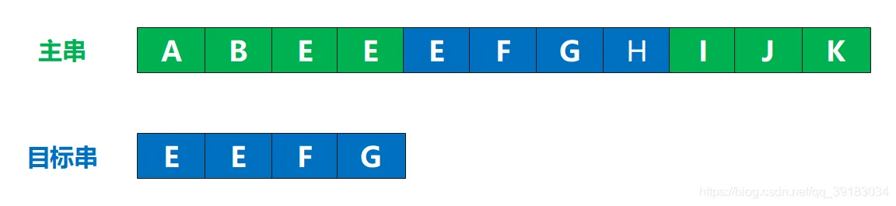
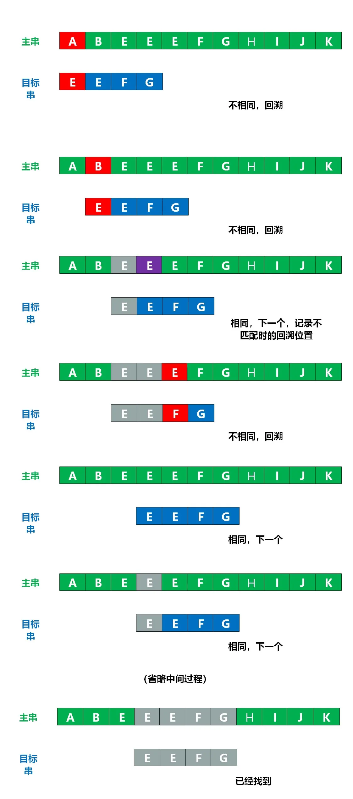
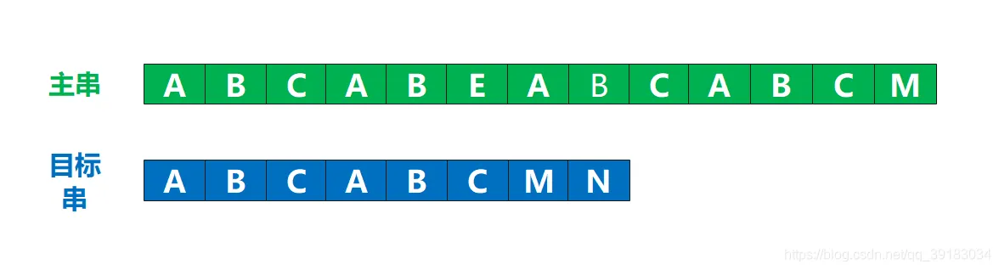
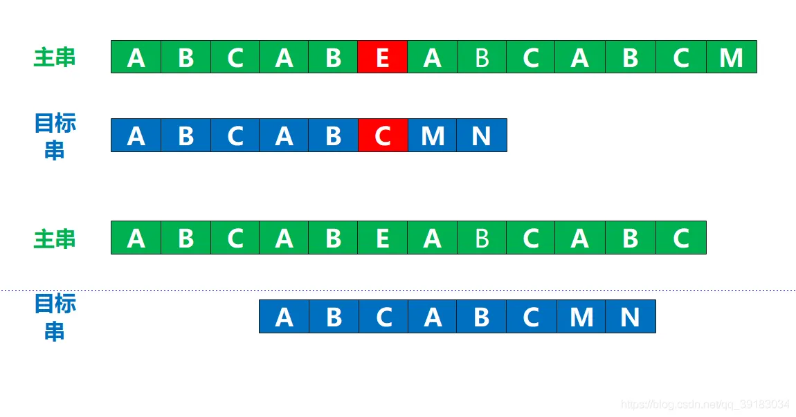
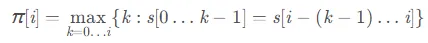
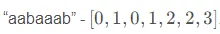
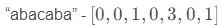
11 / SECTION
自动机（确定有限状态自动机）
- DFA 五要素：状态集合 Q、字母表 Σ、转移函数 δ、初态 q₀、终态集合 F。
- 工作方式：从 q₀ 出发逐字符转移，读完若停在终态则接受该串。
- 字符串匹配里的用法：把“模式串的所有前缀”做成状态（即 KMP 的自动机形式），读入文本时沿转移走，到达终态即命中。
- 构造：状态 = 前缀长度 0..m；转移
δ(i, c)= 从状态 i 读入 c 后最长的“仍是模式前缀”的长度，可用 π 数组预处理。 - 优点：多字符集、多次询问时转移表 O(1) 查询；缺点：表大小
O(m·σ)。 - 自动机是 AC 自动机、SAM 等高级结构的基础概念。
cpp
// KMP 自动机：go[i][c] 为状态 i 读入字符 c 后的新状态
for (int i = 0; i <= m; ++i)
for (int c = 0; c < 26; ++c) {
int j = i;
while (j && (j == m || p[j] != 'a' + c)) j = pi[j - 1];
if (j < m && p[j] == 'a' + c) ++j;
go[i][c] = j;
}12 / SECTION
什么是AC自动机？
- 定义：Trie（字典树）+ KMP（失配指针）⇒ 多模式串同时匹配的自动机，全称 Aho-Corasick automaton。
- 结构：
- Trie 树存所有模式串；
- 每个结点有
fail指针，指向“当前串的最长后缀且是某模式前缀”的结点；求法类似 KMP（BFS 逐层构造，fail[child] = go[fail[fa]][c]）。 - 匹配：文本在 Trie 上走，走不动就沿 fail 跳；每到一个结点，沿 fail 链累加就是所有命中的模式（常配合“拓扑排序/差分”避免重复跳）。
- 复杂度：建树
O(总模式长 × σ)，匹配O(文本长 + 命中数)。 - 用途：敏感词过滤、多关键词统计、AC 自动机 + 矩阵快速幂（求长度为 L 的串不含任何模式串的个数）。
- 与 KMP 的关系：单模式 → KMP；多模式 → AC 自动机。
13 / SECTION
什么是后缀树？
- 定义：把字符串的所有后缀插入一棵压缩 Trie（把只有一个儿子的链压成一条边），得到的树；每条边带一个子串区间。
- 性质：叶子数 = n，结点数 ≤ 2n，能 O(n) 建成（Ukkonen 算法）；树上有 n 个叶子，对应 n 个后缀。
- 能力：任意子串出现次数、最长重复子串、两串最长公共子串、后缀的 LCP = 两叶子的 LCA 深度。
- 缺点：实现极复杂、常数大、内存高，竞赛里几乎都用后缀数组或后缀自动机替代。
- 后缀树的“后缀数组版替身”：SA + height 数组，能力基本等价。
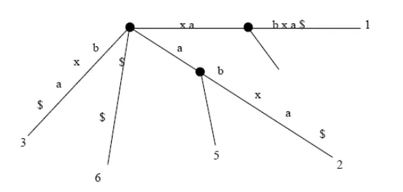
14 / SECTION
后缀平衡树简介
- 前置概念：重量平衡树——保证每次操作影响的最大子树大小为最坏/均摊/期望
O(log n)的平衡树（如替罪羊树、Treap）。 - 后缀平衡树：动态维护后缀排序的平衡树，支持在串开头添加或删除一个字符；树的中序遍历即后缀数组。
- 要点：每个结点对应一个后缀，按字典序挂进平衡树；因此“后缀排序”从静态变成动态。
- 优点：
- 思路清晰，会写平衡树就能写，比后缀自动机好理解；
- 复杂度不依赖字符集大小；
- 支持在串首删字符（后缀自动机做不到）；
- 若平衡树可持久化，则后缀平衡树也可持久化。
- 应用：字符串匹配；给定 S 与若干 T，多次询问 T 在 S 中出现次数——因已后缀排序，只要找到“第一个严格小于 T 的后缀”和“第一个严格大于 T 的后缀”，区间大小即出现次数；总复杂度
O((|S| + Σ|T|) log |S|)。 - 实现难点：插入新后缀时要用“标签 + 重量平衡”保证O(1) 比较两个后缀（否则每次比较 O(n) 会退化）。
15 / SECTION
后缀自动机（单词的有向无环图）简介
- 定义：能识别字符串所有子串的最小 DFA，状态数 ≤ 2n-1，转移数 ≤ 3n-4，构造均摊 O(n)。
- 核心概念：
- 每个状态代表一组
endpos相同的子串（结束位置集合相同）； len为该状态能代表的最长子串长度，link（后缀链接）指向“最长后缀所在的状态”；- 从初始态沿转移走出的任意路径都对应一个子串。
- 关键性质：状态按
len排序后，link构成一棵树（parent 树），子树的endpos大小 = 该状态代表子串的出现次数。 - 经典应用：本质不同子串个数（
Σ len[v] - len[link[v]]）、子串出现次数、最长重复子串、字典序第 k 小子串、多串最长公共子串。 - 构造要点：在线逐字符扩展，维护
last；克隆状态时len/next/link一并复制，len取len[p]+1。
cpp
// 扩展一个字符 c（伪代码）
cur = ++tot; len[cur] = len[last] + 1;
p = last;
while (p && !next[p][c]) next[p][c] = cur, p = link[p];
if (!p) link[cur] = 1;
else {
q = next[p][c];
if (len[p] + 1 == len[q]) link[cur] = q;
else { clone = ++tot; 复制 q; len[clone] = len[p] + 1;
while (p && next[p][c] == q) next[p][c] = clone, p = link[p];
link[q] = link[cur] = clone; }
}
last = cur;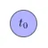
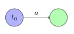
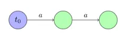
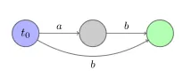
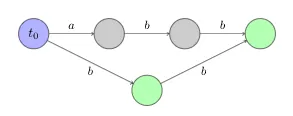
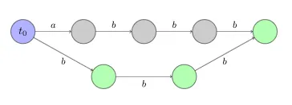
16 / SECTION
广义后缀自动机概述
- 定义：把 SAM 扩展到多个字符串（Trie 上）：所有串的所有子串都建进同一台自动机。
- 两种建法：
- 每个串单独建完
last重置为根（最省事，适合模式串数不多）； - 在 Trie 上 BFS 建（保证状态数最省，
O(总字符数)）。 - 注意：插入时若
next[p][c]已存在且len[p]+1 == len[q]，直接返回 q 而不新建状态（否则状态数会爆）。 - 用途：多串公共子串、多串的本质不同子串计数、多文本的统计类问题。
17 / SECTION
序列自动机概述
- 定义：对序列
s建的最简自动机：next[i][c]表示位置 i 之后第一次出现字符 c 的位置。 - 构造：从后往前扫，
next[i][c] = next[i+1][c]，再令next[i][s[i+1]] = i+1；空间O(n·σ)，也可用“每个字符的出现位置表 + 二分”。 - 能力：O(1) 判断某串是否为 s 的子序列；统计不同子序列个数（DP：
f[i] = 1 + Σ f[next[i][c]]）。 - 与子串结构的区别：子序列不要求连续，所以序列自动机只需“下一个出现位置”这一信息。
- 进阶：序列自动机 + DP 解决“最短非子序列”“子序列计数”等题。
18 / SECTION
什么是Manacher算法？
- 定义：线性时间求字符串最长回文子串的算法。
- 预处理：字符间插入分隔符（如
#），把奇偶回文统一成奇数长度，a b a→#a#b#a#。 - 核心：维护当前回文右边界最靠右的中心
mid与右端r；用对称性p[i] = min(p[2*mid - i], r - i + 1)先取一个下界，再暴力外扩。 - 复杂度：每个位置最多被扩展一次 ⇒
O(n)；空间 O(n)。 - 结果换算：
p[i] - 1即原串中以 i 为中心的回文长度（p为半径）。 - 与哈希/manacher 的替代方案：二分 + 哈希判回文 O(n log n)，代码更简单但慢一点。
cpp
int manacher(string s) {
string t = "^#";
for (char c : s) t += c, t += '#';
t += '$';
int n = t.size(), ans = 0, mid = 0, r = 0;
vector<int> p(n);
for (int i = 1; i < n - 1; ++i) {
p[i] = (i < r) ? min(r - i, p[2 * mid - i]) : 1;
while (t[i - p[i]] == t[i + p[i]]) ++p[i];
if (i + p[i] > r) mid = i, r = i + p[i];
ans = max(ans, p[i] - 1);
}
return ans;
}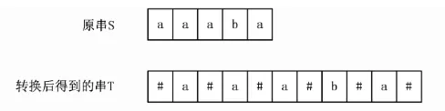
19 / SECTION
最小表示法算法解析
- 问题：长度为 n 的循环串，从哪个位置开始读能得到字典序最小的串（循环同构的最小表示）。
- 朴素：枚举 n 个起点比较，
O(n²)。 - 最小表示法：双指针 i、j，比较
s[(i+k)%n]与s[(j+k)%n]；失配时把较大者的起点跳过 k+1 个位置（因为中间这些位置不可能更优）。
cpp
int minRep(string s) {
int n = s.size(), i = 0, j = 1, k = 0;
while (i < n && j < n && k < n) {
char a = s[(i + k) % n], b = s[(j + k) % n];
if (a == b) { ++k; continue; }
if (a > b) i = i + k + 1; else j = j + k + 1;
if (i == j) ++j;
k = 0;
}
return min(i, j);
}- 复杂度 O(n)；用途：判断两串是否循环同构（各自求最小表示后比较）。
20 / SECTION
什么是Lyndon分解？
- Lyndon 串：非空串，且它严格小于它的所有真后缀（按字典序）。
- Lyndon 分解：把串唯一地拆成
w₁w₂…w_k，每段都是 Lyndon 串，且w₁ ≥ w₂ ≥ … ≥ w_k。 - Duval 算法（O(n)）：维护当前段起点 i 与比较位置 j、k；
s[j] == s[k]则推进，s[j] < s[k]则重置段首，s[j] > s[k]则切出一段。
cpp
// Duval：输出每段的起点与长度
int i = 0;
while (i < n) {
int j = i + 1, k = i;
while (j < n && s[k] <= s[j]) {
if (s[k] < s[j]) k = i; else ++k;
++j;
}
while (i <= k) { /* 输出一段，长度 j-k */ i += j - k; }
}- 用途：最小表示（Lyndon 分解后取最小段）、字符串周期、与后缀数组/eertree 组合的高级题。
- 选学内容，竞赛中出现频率不高但思路优雅。

21 / SECTION
什么是后缀数组？
- 定义：
SA[i]为排名第 i 的后缀的起始位置；rank[i]为后缀 i 的名次；height[i] = LCP(SA[i-1], SA[i])。 - 求法（倍增 + 基数排序）：先按首字符排，再按“前 2^k 个字符”排序，用两个关键字（
rank[i]、rank[i+2^k]）基数排序，O(n log n)；SA-IS 可到 O(n)。 - height 数组：利用性质
height[rank[i]] ≥ height[rank[i-1]] - 1，顺序递推 O(n)。 - 能力（配合 RMQ）：
- 任意两后缀的 LCP =
min(height[rank[i]+1 .. rank[j]])； - 本质不同子串数 =
n(n+1)/2 - Σ height[i]； - 最长重复子串 =
max(height)； - 多串拼接求最长公共子串。
cpp
for (int k = 1; k <= n; k <<= 1) { /* 按 (rank[i], rank[i+k]) 基数排序，重算 rank */ }
// height
for (int i = 1, k = 0; i <= n; ++i) {
if (rank[i] == 1) { k = 0; continue; } // 第一名没有前一后缀，k 需归零
if (k) --k;
int j = sa[rank[i] - 1];
while (i + k <= n && j + k <= n && s[i + k] == s[j + k]) ++k; // 加边界保护
height[rank[i]] = k;
}- 与 SAM 的分工：SA 强在“后缀排序 + LCP 区间”，SAM 强在“子串计数 + 自动机 DP”。
22 / SECTION
回文树/回文自动机 (PAM) 实现及模板
- 定义：统计一个串所有回文子串的结构，两个根（奇回文长度 0、偶回文长度 -1），结点数 ≤ n+2，构造 O(n)。
- 结点信息：
len（该结点代表的最长回文长度）、fail（最长回文后缀结点）、next[c]、cnt（出现次数）。 - 构造：逐字符加入，从
last沿fail找“能接上当前字符”的位置，新建结点；再为它求fail（在fail[last]链上找）。 - 能力：
- 本质不同回文子串个数 = 结点数 - 2；
- 每个回文子串出现次数（
cnt沿 fail 树自底向上累加）； - 以某位置结尾的最长回文（
last的len）。 - 与 Manacher 的区别：Manacher 只求“最长回文”，PAM 能枚举/统计全部回文。
cpp
// 扩展第 i 个字符（s 从 1 开始存，s[0] 为哨兵；结点 1 为奇根 len=-1，结点 2 为偶根 len=0）
int getfail(int x, int i) {
while (s[i - len[x] - 1] != s[i]) x = fail[x];
return x;
}
// p = getfail(last, i);
// 若 next[p][c] 不存在：新建结点，len = len[p] + 2，fail = next[getfail(fail[p], i)][c]；
// 否则直接取 next[p][c]；最后 last = 该结点，并沿 fail 链累加 cnt。